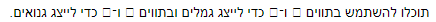

אני משתמש במק ולכן מתחילת הקורס אני בעצם לא מצליח לטעון את התמונות ביחד עם המחברות.
עכשיו נתקלתי בבעיה - התווים שנאמר לנו להשתמש בהם בשביל לייצג גנואים וגמלים לא ניתנים להבנה אצלי. ניסיתי להעתיק ולהדביק ולחפש בעצם מהם התווים האלה, אך ללא הצלחה.
מה אפשר לעשות על מנת שאוכל לראות את התווים האלו?
האם אפשר להשתמש בתווים אחרים על מנת לייצג את הגנואים והגמלים?
תודה
aviadamar
ברור שאפשר להשתמש בתווים אחרים לייצג. שים אותם כמשתנים גלובלים וכך תוכל גם בקלות להחליף אם תרצה.
בכל אופן:
ככה אני רואה את המחברות שלי… למעשה רק מלל, את התמונות אני אף פעם לא רואה במחברת עצמה.
Yam
איך אתה פותח את המחברת?
Liran_C
תוריד את התיקיה מחדש של שבוע 8 מהאתר בגרסא שיש לך אין לך את התמונות בתיקית תמונות…
פשוט תוריד ואז תחליף את התיקיה של התמונות בתיקיה החדשה.
ככה היה לי,
כי הורדתי לפני התיקונים.
tommys8192
כל פעם אני מוריד את המחברות, ואז בhome page של jupyter notebook אני עושה upload ידנית לכל המחברות, התמונות והresouces הקיימים.
משום מה זה אף פעם לא הצלחתי למזג את התמונות ככה שיופיעו לי במחברות עצמם. עד היום זה לא הפריע לי כי פשוט הייתי פותח את התמונה ידנית ברגע שהייתי רואה שאמורה להופיע תמונה שממחישה הסבר כלשהו.
הפעם זה היה נראה לי כבר שאולי זה משהו שרצוי שייפתר.
Yam
ניסית להפעיל את המחברות בצורה שהוסברה בשבוע הראשון?
tommys8192
כן, בשבוע הראשון היו לי בעיות (אולי כי אני משתמש במק) והצלחתי בסופו של דבר למצוא פתרון שנותן לי להעלות את המחברות בצורה הזו.
אשמח בכל מקרה לקישור להסבר המפורט, אולי בכל זאת יש איזה משהו שפספסתי ואוכל לסדר את זה.
בכל אופן, תודה על העזרה ועל הקורס!
אני לא עובדת על מק, ותמיד אני רואה את התמונות, חוץ מהתווים של גנואים וגמלים

2 לייקים
eliory09
אוקיי, אני כמוכם.
לא הצלחתי למצוא תשובה מספיק טובה באינטרנט ואשמח לעזרתכם.
בגדול, מחיפוש מהיר באינטרנט הגעתי למסקנה שמדובר בפונט LastResort שאמור להכיל את התווים האלה. הוא כביכול מוטמע ב-macos אבל אני לא מצליח לראות את התווים.
בנוגע לווינדוס, נשמע שלחלק עובד ולחלק לא.
יש מישהו שמכיר את הבעיה ויודע לפתור אותה?
עריכה: תשובה נכונה נמצאת מטה.
הפונט LastResort הוא פונט אליו מערכת ההפעלה פונה כשאין לה יכולת לספק תו מתאים לקוד המבוקש.
כשמה כן היא למעשה
zurikarat
אם את מעתיקה את אחד התווים ואז מדביקה אותו (Copy-Paste) באחד החלונות של ג’ופיטר נוטבוק, מה זה מראה?
Gili
גם את הריבוע הזה שלא אומר כלום
zurikarat
תנסי להפעיל עליהם את הפונקציה ord, יש פלט?
Gili
כן יש פלט, ואם אם אני עושה chr על הפלט, שוב הריבוע הזה
zurikarat
מבאס, אולי תאתחלי, זו נשמעת כבעיה בגופיטר עצמו
Gili
גם לא עובד… לא נורא. תודה!
eliory09
זו לא בעיה בג׳ופיטר, זו בעיה בתמיכה של התו במערכת ההפעלה.
אני עדיין לא יודע איך לפתור את זה, אעדכן.


{kind=link}